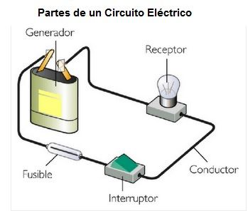

¿Qué es un Circuito
En electrónica, un circuito eléctrico se define como una trayectoria o camino completo y cerrado a través del cual puede circular una corriente eléctrica, esto puede significar un sistema de conductores y componentes eléctricos que forman el camino o circuito.
Un circuito simple consta de una fuente de corriente, conductores y una carga. El término circuito puede utilizarse en sentido general para referirse a cualquier camino fijo por el que pueda circular electricidad, datos o una señal.
Cómo Funcionan los Circuitos Electrónicos
En un circuito electrónico, los electrones salen de la fuente de alimentación, viajan por los conductores, pasan por una carga para realizar un trabajo y finalmente vuelven a la fuente. Se denomina circuito por la trayectoria circular que recorren los electrones. La relación entre el flujo eléctrico y la carga se describe en la Ley de Ohm. En un circuito, los electrones viajan desde el lado negativo de la fuente de alimentación hasta el lado positivo.
La mayoría de los dispositivos electrónicos modernos utilizan placas de circuito impreso que tienen trazas de circuito que actúan como conductores. Las placas de circuitos también contienen todos los conectores y otros componentes necesarios para que el circuito realice el trabajo requerido.
Tipos de Circuitos Eléctricos
Existen cinco tipos principales de circuitos eléctricos: en serie, en paralelo, cerrados, abiertos y en cortocircuito. Cada tipo utiliza componentes diferentes y tiene propiedades distintas.
Circuitos en serie
En un circuito en serie, la misma corriente pasa por todos los componentes conectados en línea de un extremo a otro. Esto facilita la detección de un fallo o rotura en cualquiera de los componentes. En un circuito en serie, si falla un componente, todo el circuito deja de funcionar. Los circuitos en serie se utilizan en bombillas, linternas, calentadores de agua, congeladores y otros artículos de uso cotidiano.
Circuitos en paralelo
En un circuito paralelo, dos o más componentes están conectados uno al lado del otro y la corriente se divide entre ellos. Este tipo de circuito permite caminos separados con resistencias diferentes y cada componente puede aislarse del resto. Si un componente falla en un circuito paralelo, no afecta al funcionamiento de los demás componentes del circuito. Gracias a este tipo de circuito, puede hacer funcionar las bombillas y otros aparatos eléctricos de su casa independientemente unos de otros.
Circuito cerrado
Un circuito cerrado es aquel que tiene todos sus componentes conectados en bucle. Esto permite que la corriente fluya y complete el circuito, permitiendo que la electricidad pase a través de diferentes dispositivos. Estos circuitos se utilizan normalmente en motores eléctricos, timbres y sistemas de intercomunicación, sistemas de alarma, etc. Este tipo de circuito puede utilizarse para diversas aplicaciones, incluidos los sistemas de iluminación cuando el interruptor está encendido.
Circuitos abiertos
Cuando hay una brecha en un circuito o el interruptor está apagado, impidiendo que la corriente fluya a través de él, tenemos un circuito abierto. Este tipo de circuito se utiliza para controlar el flujo de electricidad, como interruptores y disyuntores. Si un circuito abierto falla, no podrá realizar su función hasta que sea reparado o sustituido.
Cortocircuitos
Los cortocircuitos son vías por las que circula demasiada corriente, lo que hace que el circuito se sobrecargue y falle. Este tipo de circuito suele estar causado por un fallo en el cableado o en los componentes del circuito. En un cortocircuito, tanto el punto positivo como el negativo del circuito se conectan, permitiendo que la corriente fluya en ambas direcciones. Los cortocircuitos se utilizan en la soldadura por arco.
Éstos son sólo algunos de los distintos tipos de circuitos eléctricos y sus usos. Tanto si necesitas un circuito para un simple interruptor como para algo más complejo, como un sistema de control industrial, entender cómo funciona cada tipo puede ayudarte a elegir el adecuado para el trabajo.
Circuitos en Redes y Telecomunicaciones
En telecomunicaciones, un circuito es el camino completo que sigue un mensaje para ir del emisor al receptor y viceversa. Históricamente, para que los telégrafos y los primeros sistemas telefónicos funcionaran, necesitaban una ruta eléctrica completa entre el emisor y el receptor. Esto se conseguía con largos tendidos de cables que podían conectarse según fuera necesario en los tableros de distribución (switchboards).
En telefonía, cada conexión de voz es un circuito y el número de llamadas simultáneas, o circuitos, se utiliza para tarificar la capacidad del servicio telefónico. Las redes de circuitos conmutados crean conexiones de circuitos físicos automáticamente. En las redes de fibra conmutada, en lugar de conectarse un circuito eléctrico, se cambia el trayecto que recorre la luz.
Características de un Circuito Eléctrico
Las características básicas de los circuitos eléctricos son:
• Un circuito eléctrico es siempre un camino cerrado.
•Un circuito eléctrico siempre contiene al menos una fuente de energía que actúa como fuente de electrones.
•Los elementos eléctricos incluyen una fuente de energía incontrolada y otra controlada, resistores, condensadores, inductores, etc.
•En un circuito eléctrico el flujo de electrones tiene lugar desde el terminal negativo al positivo.
•El sentido del flujo de la corriente convencional es del terminal positivo al negativo.
•El flujo de corriente provoca una caída potencial en los distintos elementos.
Circuito Simple
Uncircuito simple comprende la fuente de energía, los conductores, el interruptor y la carga.
•Celda: Es la fuente de energía que proporciona la diferencia de potencial en el circuito eléctrico.
•Carga: una resistor que consume corriente en un circuito se llama carga. Generalmente, una carga es una bombilla.
•Conductores: Los conductores de cobre que conducen la electricidad en un circuito se llaman conductores.
•Interruptor: Un dispositivo que controla el flujo entrante de corriente en un circuito eléctrico se llama interruptor.
Términos relacionados con Circuitos y redes eléctricas •Nodo: Se denomina nodo a un punto o unión donde se encuentran dos o más elementos de un circuito (resistor, condensador, inductor, etc.).
•Rama: Una parte o sección de un circuito que se encuentra entre dos uniones se denomina rama. En una rama se pueden conectar uno o varios elementos que tengan dos terminales.
•Bucle: Se denomina bucle a un camino cerrado en un circuito en el que pueden darse más de dos mallas, es decir, puede haber muchas mallas en un bucle, pero una malla no contiene un bucle.
•Malla: Un bucle cerrado que no contiene ningún otro bucle en su interior o un camino que no contiene otros caminos se denomina Malla.